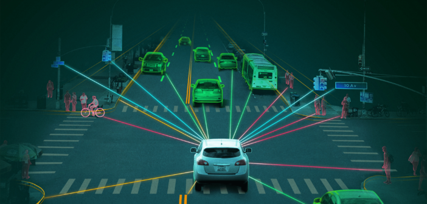

Technology/Topic
Figure 1
Note. Autonomous Driving From Research in Autonomous Driving - A Historic Bibliometric View of the Research Development in Autonomous Driving , by International Journal of Innovation and Economic Development, n.d. (https://researchleap.com/research-in-autonomous-driving-a-historic-bibliometric-view-of-the-research-development-in-autonomous-driving/).
The evolution of Artificial Intelligence enhanced our lifestyles in numerous ways. Now, machines can imitate humans' intelligence and can make decisions or perform tasks instead of humans (OCI, n.d.). Most common implementation of AI that we can easily access will be autonomous vehicles. The demand for autonomous vehicles is higher than ever. The top car market leaders compete to deploy the most safe and efficient autonomous cars in the market (Forbes, 2021).
Autonomous cars can sense the environment and drive itself without any interaction of humans. Autonomous cars are expected to perform tasks as humans must do. For example, not only driving itself to the destination, but also avoiding any unexpected obstacles or managing any kinds of incidents.
caution: this video might be disturbing.
(ITV news, 2018)
However, numerous issues arose after deploying this technology in real life and one of the most concerning issues the industry is facing is the safety of autonomous cars. Despite the fact that the leading technology companies such as Google, Uber or Tesla are investing multibillion-dollar to develop autonomous vehicles, the fatalities still occurred and killed pedestrians. Uber withdrew to develop its own autonomous vehicles after a pedestrian got killed by Uber's autonomous vehicle in 2018 (The Guardian, 2020). The most accidents made by autonomous cars are caused by the failure to sense objects which implement machine learning models built by humans (Baecker, 2019).
Therefore, it is certain that autonomous cars must be improved to manage every incident for our safety. We believe the car companies must deploy autonomous vehicles that are absolutely safe in any surroundings and believe it is the biggest obstacle to overcome in the car industry.